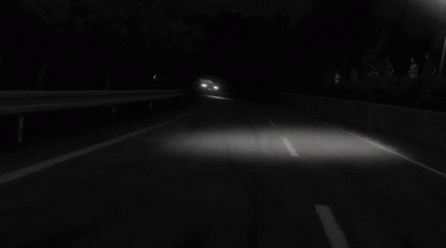
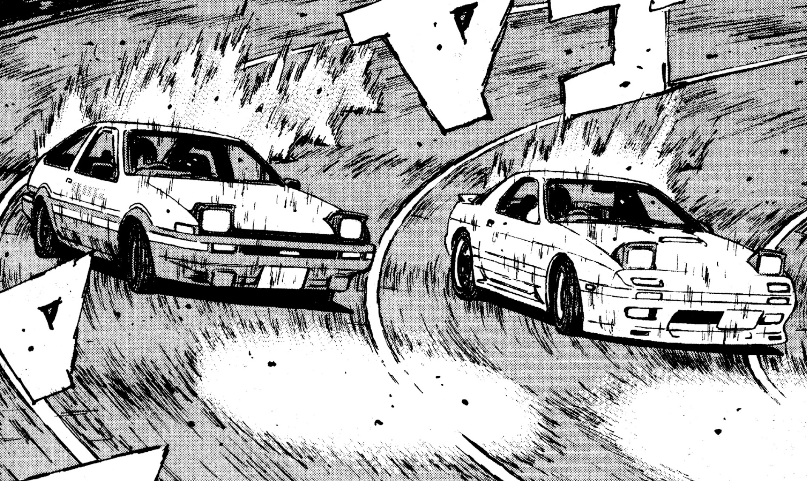
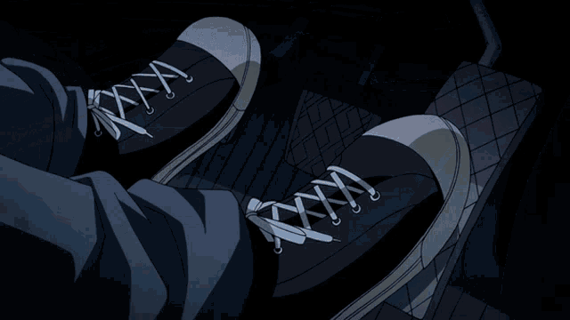
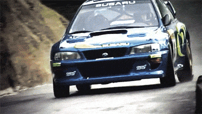
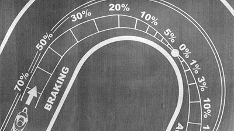
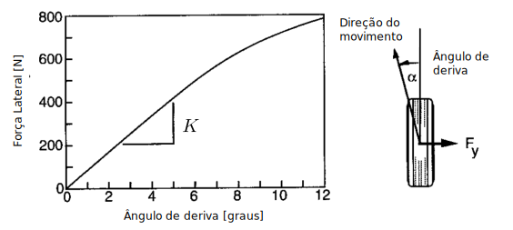
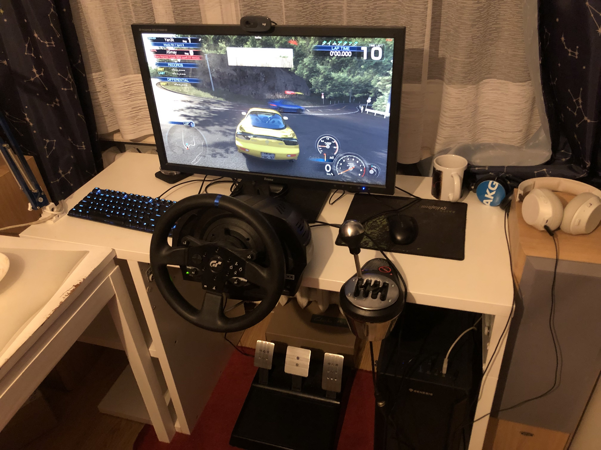

Chinese character 峠touge means literally
mountain road or pass. Because of Japans unique
geography consisting of islands nearly 73% of land is
mountainius and rugged. Because of this the majority of roads in
japans consists of sharp turn and hairpins to reduce the
difference in altitude needed to climb these roads. This results
in less wear on cars and increased safety due to lower speed but
ironically creates the perfect scenario for enthusiast to race
on.

History
歴史
Around twenty five years ago, these same roads became the hallowed
grounds to which the sport of Touge was born. Japanese,
motorcycling legend, Kunimitsu Takahashi, was the foremost creator of
drifting techniques in the 1970s. His legacy popularized the sport and
give rise to many 走り屋 hashirya, japanese street
racers.
Keiichi Tsuchiya
became particularly interested by Takahashi’s early drift techniques
and began honing his drifting skills on these same mountain roads and
quickly gained a reputation amongst the racing crowd as he took them
to the next level. In 1987, several popular car magazines and tuning
garages agreed to produce a video of Tsuchiya’s drifting skills in his
Toyota AE86 (Corolla). The grainy low budget video, known as Pluspy,
became an international hit and inspired many of the professional
drifting drivers on the circuits today. Because of his flashy and fast
driving Keiichi is known as the ドリフトキング - drift king.
The combination of Japan’s immense affluence in the late 1980s and
early 1990s along with the rise in the aftermarket modifications
available for their domestic car models resulted in a dramatic rise of
the sport across Japan. Drifting exploded into mainstream media such as
movie Fast and Furius or anime Initial D.
Rules
ルール
For touge racing team battling, a race has two stages
downhill
uphill
One car leads the race during the uphill stage, with
the second car leading the downhill.

Because most touge races feature narrow tracks, overtaking is
extremely difficult and is sometimes impossible. During the race, the
lead car wins if the space between the cars increases considerably,
while the following car wins if:
the gap between them stays the same
the gap decreases from start to finish
overtakes the lead car
If any car spins out or crashes, the other one wins the race.
Touge races start illegally when one car attempts to overtake another
and the car in front will not let the car behind pass and speeds up.
Also, in night races, the car behind will flash its headlights and the
lead car will then speed up to begin the race.
Cars
JDM車
Unlike straight line racing where a lot depends on outright power, in
Touge racing, other performance aspects will set your car apart,
especially handling and weight distribution.
For instance, a small, tossable car like the Toyota MR2, prone to
snap-oversteer, can beat a stock Mercedes AMG GT-R on a Touge course
with the proper tuning. The same is true for other smaller cars such
as the ever-popular AE86 and Honda S2000. Here are examples of few
iconic Touge cars.
Entering a corner at optimum speed, holding velocity, and exiting a
corner under acceleration all while under keeping the vehicle
perfectly in balance is the key to remaining fast and smooth on the
Touge.
To achieve this there are many techniques used by Touge drivers such as:
Heel-Toe Shifting
Using heel of foot to blip gas when braking and shift to lower gear.
Thanks to faster shift you can step on gas faster.

Using Weight Transfer
Measurable change of load borne by different wheels during
acceleration. Experienced drivers use this technique like
extention of the body, tosing the car around hairpins smoothly.
Fast is smooth. And smooth is fast.

Left Foot Braking
Used to reduce time needed to move right foot between gas
and brake. Also usefull for weight transfering car.
Trail Braking
Graduall release of brake ending around apex. Proper trail braking allows to
massively increase turning potential thanks to compressed forks and downward force on tires.

Utilizing Slip Angle
Refers to the angle between contact path of tires and direction of movement.
Utilizing the maximal possible slip angle is the fastest way around corner.

And many more...
Why?
何で？
Because I like Touge racing online.

Online
オンライン
Want to play Touge with me? Here are some cool Assetto Corsa servers:


{kind=link}
{kind=link}
{kind=link}
{kind=link}